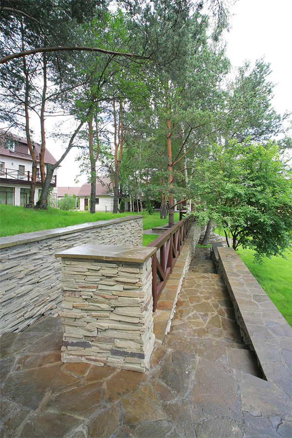
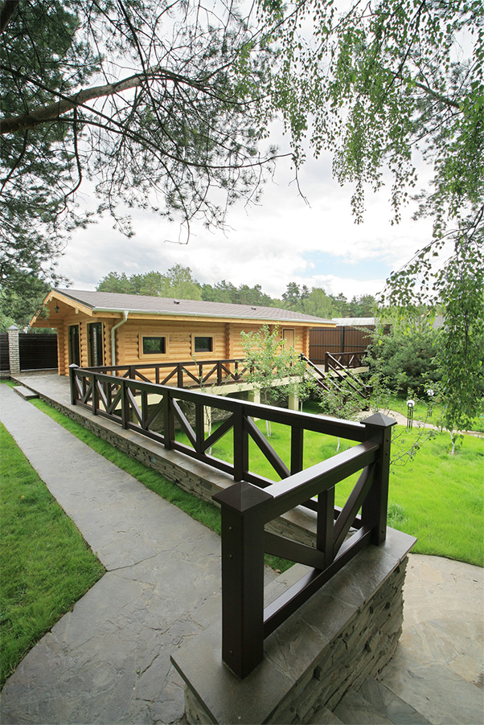

Разработка ландшафтно-архитектурной концепции комплекса подпорных стен, бани, гостевого дома.
Баня
Лаконичный европейский стиль плюс функциональность, помноженные на потрясающую фактуру натуральной сосны. Баня возведена из цилиндрического бруса и, поднятая на возвышение, органично вписывается в общую концепцию многоуровневого ландшафта. Продуманная логистика позволяет легко и быстро добраться до бани можно как из самого жилого коттеджа или гостевого домика, так и с территории участка.


Баня занимает видное место в общей композиции ландшафтного дизайна участка. Массивные перила подпорной стены, декорированной фасадным камнем, создают в зоне расположения бани отсылку к террасе под открытым небом. Насладиться панорамой молодого ельника и зеленью газона с садовыми деревьями можно не только стоя, но и принимая солнечные ванны на выставленных шезлонгах.